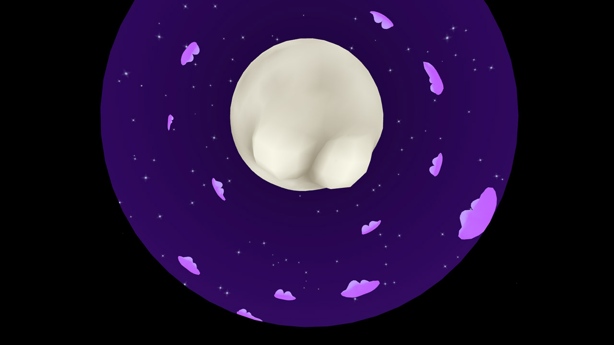
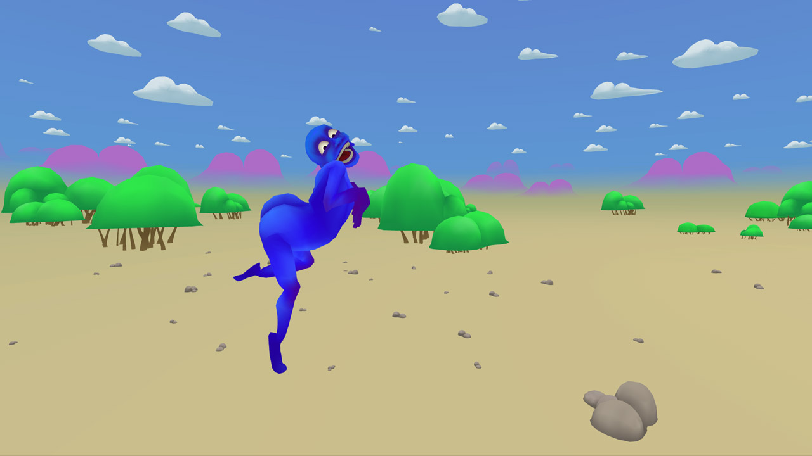
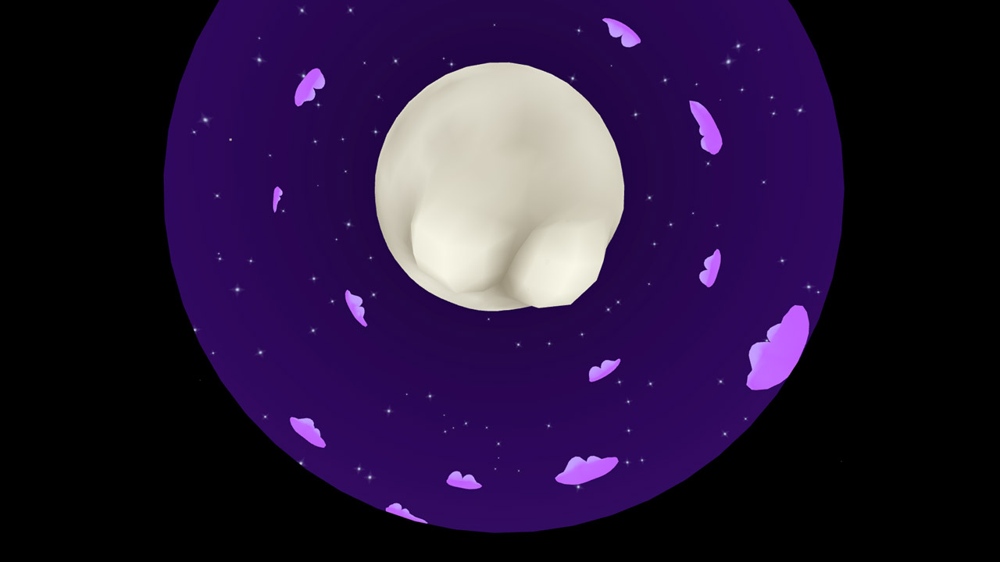
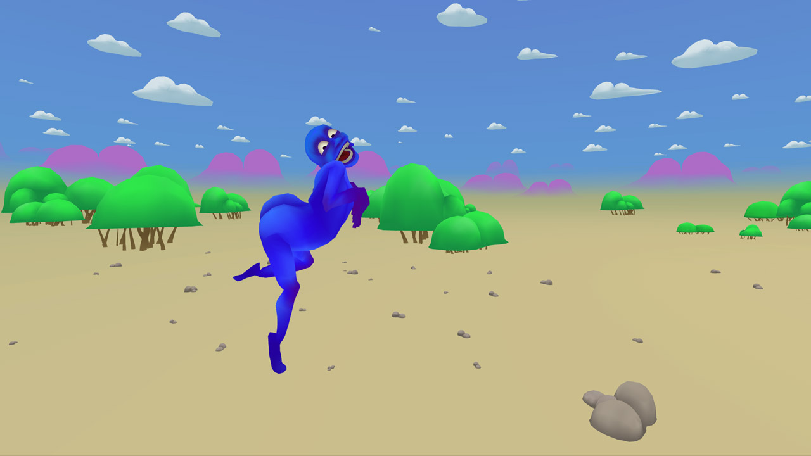

BUTTS
BUTTS started as a solo animation project by Tyler Hurd, a 2 minute animated short film released in early 2014, made without VR in mind. Immediately following Skillman & Hackett got involved and it was converted to a VR experience for the DK1. Storytelling moments were creatively reimagined for the new medium. Recognized by many as the first animated short film in VR, it was nominated for Most Innovative at The Proto Awards in 2014, and since has been on released on Gear VR, HTC Vive, and Oculus Rift.
Official Selection - Cannes NEXT - 2016 Official Selection - Kaleidoscope World Tour - 2016 Official Selection - Kaleidoscope North American Tour - 2015 Nominated "Most Innovative" - Proto Awards - 2014
Press
| Booooooom | Motionographer |
| Vimeo Best of 2014 | Kotaku |
| Game Informer | Upload VR |
| Road To VR | Kill Screen Daily |
| SFVR Meetup | Kaleidoscope |
| Variety |

 



| A VR Experience by | Gentle Manhands |
| Creator | Tyler Hurd |
| Sound | Matt Englund |
| VR Consultants | Skillman & Hackett |
| Animator | Tyler Hurd |
| Original Recording | P. Green - Cartoon Musicfrom Archive.org |
| Special Thanks | Kristjan ZaklynskyMelkorka HelgoadottirJesse JohansenDrew SkillmanPatrick Hackett |